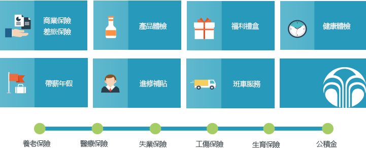

NU SKIN 全面而�N心的薪酬福利，�槟愕穆��鲋�旅保�{�o航，��每一位�T工都倍感�P�选�

EAP�T工�P��
致力於�椭�家人��提升工作�c生活品�|的福利�c支援服�罩J�����０浮��椭�各位家人及其家庭成�T解�Q在工作或生活中可能遇到的各�N心理或行�槔Щ螅��椭�家人��提高工作效率、改善生活品�|，最�K�_到工作�c生活的完美�Y合。
��性工作制+移�愚k公
�O有餐�d，健身房，��律室，�腥松嘲l、甚至�B“汽��”也搬�M了�k公室，完全可以根��你心情和便利程度�磉x�窆ぷ鞯攸c；在公司�e�o���W路完全覆�w，�K且每台手提���X都�b有 soft phone，�贤�交流不受“��”制！
公司�a品�w��
每月一次的�a品�w��。一起�^�Y，NU SKIN ��一�o二-�P�勖恳晃患胰说慕】蹬c美��~
注：以上福利�m��於 NU SKIN 如新大中�A��部所有行政�T工，港台市�黾胺止�司的部分福利（比如：班��服�眨���依����地特色有部分差�e，具�w��情��洽�� NU SKIN 新���FHR。